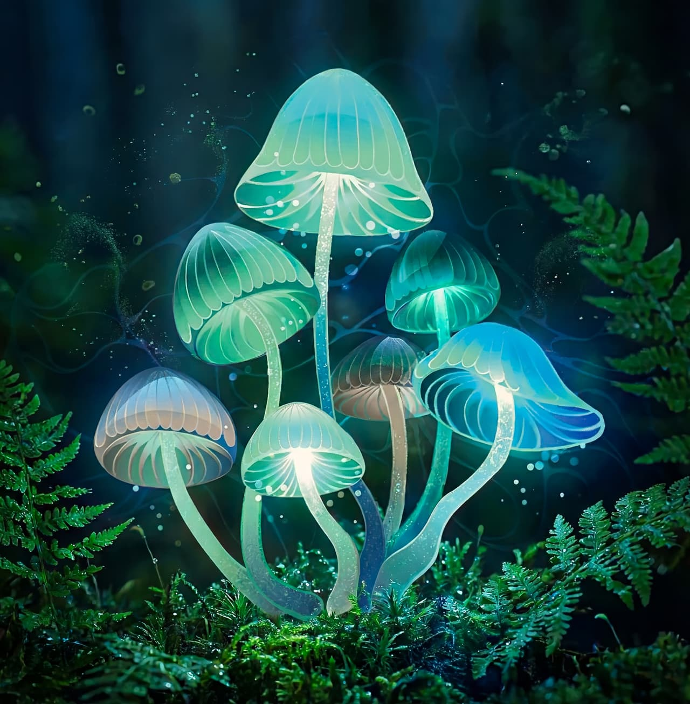

La Bioluminescence
La Lumière Vivante des Océans
🗼 French
 Dans les profondeurs sombres de l'océan, un spectacle magique se produit chaque nuit. Des milliers de créatures marines créent leur propre lumière grâce à un phénomène appelé la bioluminescence. Ce mot vient du grec "bios" qui signifie vie, et du latin "lumen" qui signifie lumière.
1. Comment ça marche ?
La bioluminescence est une réaction chimique qui se passe à
l'intérieur du corps de certains animaux. Deux substances chimiques se
mélangent : la luciférine et la luciférase. Quand ces deux éléments se
rencontrent en présence d'oxygène, ils produisent de la lumière sans
chaleur. C'est ce qu'on appelle une lumière froide.
2. Qui peut briller ?
Environ 90% des créatures qui vivent dans les zones profondes de
l'océan peuvent produire de la lumière. Les méduses sont peut-être les
plus connues, mais il y a aussi des poissons, des calmars, et même de
minuscules organismes appelés plancton. Sur terre, les lucioles
utilisent aussi la bioluminescence pour communiquer entre elles.
3. Pourquoi briller ?
Les animaux marins utilisent leur lumière pour différentes raisons.
Certains l'utilisent pour attirer leurs proies, comme le
poisson-pêcheur qui a une petite lumière au bout d'une "canne à pêche"
naturelle sur sa tête. D'autres l'utilisent pour se défendre : quand
ils sont attaqués, ils produisent un nuage lumineux qui aveugle ou
distrait le prédateur.
La bioluminescence sert aussi à la communication. Les calmars peuvent
créer des motifs lumineux sur leur corps pour "parler" avec d'autres
calmars. C'est comme un langage secret fait de lumière.
4. Un phénomène menacé
Malheureusement, la pollution lumineuse des villes côtières perturbe
ces créatures. La lumière artificielle des humains rend difficile pour
ces animaux de voir leurs propres signaux lumineux. Les scientifiques
étudient ce problème pour mieux protéger ces créatures
extraordinaires.
5. Applications pour l'humanité
Les chercheurs s'intéressent beaucoup à la bioluminescence. Ils
utilisent les protéines luminescentes dans la recherche médicale pour
observer les cellules vivantes. Ces protéines aident aussi à détecter
les bactéries dans l'eau ou la nourriture. Peut-être qu'un jour, nous
pourrons utiliser la bioluminescence pour éclairer nos villes sans
électricité. Des arbres qui brillent la nuit au lieu des lampadaires ?
Ce n'est plus de la science-fiction, c'est un projet réel sur lequel
des scientifiques travaillent aujourd'hui. La bioluminescence nous
rappelle que la nature garde encore beaucoup de secrets merveilleux à
découvrir.
English
Here’s the lowdown on groundwater — that invisible but absolutely vital treasure hiding just beneath our feet. It makes up nearly 30% of all the fresh water on the planet… and yet, we almost never think about it. But what is it, really? And why are scientists sounding the alarm?
1. What groundwater really is:
Forget the idea of huge rivers flowing through underground caves.
Nature works differently — and honestly, it’s even more amazing.
Picture the ground as a giant sponge made of rock and sediment. Water
doesn’t flow through tunnels; it seeps into tiny pores and cracks in
the rock. When a layer of rock can both store water and let it move
through, we call it an aquifer. To function properly, an aquifer needs
two key traits:
- porosity, to hold water;
- permeability, so water can move through it.
2. How we access that water:
This water is extracted through wells drilled in two main types of
aquifers:
- Free aquifers (or unconfined): These are closer to the surface. They recharge fairly quickly — sometimes in just a few years or decades — because rainwater can seep in directly. But they also react quickly to droughts, heat waves, and over-pumping.
- Captive aquifers (or confined): These are deeper, trapped between layers of impermeable rock. And here’s the kicker: recharge is extremely slow — centuries, even millennia. Some even hold fossil water, almost unchanged since ancient times. When we drill into a confined aquifer, internal pressure can actually push the water up by itself. That’s the magic of an artesian well — a natural marvel. The term "artesian" comes from the French province of Artois (formerly called Artesium), in northern France.
3. The danger that worries scientists: subsidence
And here’s where it gets alarming. When we pump out more water than
gets replaced, the ground above literally starts to sink. Without the
water to support the underground structure, everything compresses…
sometimes by several meters. In California’s San Joaquin Valley, the
ground has dropped more than eight meters. Eight meters! Fields,
roads, and even entire neighborhoods are sinking — simply because
we’re pumping too much, too fast. And the worst part? Once the ground
collapses, it never goes back to how it was. The pores close up, and
the aquifer permanently loses some of its storage capacity. In coastal
areas, over-pumping can even invite seawater in… contaminating
everything.
4. In a nutshell:
Groundwater is an incredible resource: silent, patient, ancient. But
some aquifers take decades to refill… and others take centuries. If we
drain them faster than they can recharge, the damage may be
irreversible. It’s not just about water: we literally have to protect
the ground beneath our feet.
GLOSSARY
| souterrain | underground | |
| trésor | treasure | |
| vital | vital | |
| cacher | to hide | |
| représenter | to represent | |
| scientifique | scientist | |
| tirer | to pull / to sound (alarm) | |
| serpenter | to wind / to snake | |
| grotte | cave | |
| autrement | differently | |
| immense | immense | |
| éponge | sponge | |
| composé | composed | |
| roche | rock | |
| sédiment | sediment | |
| tunnel | tunnel | |
| remplir | to fill | |
| minuscule | tiny | |
| pore | pore | |
| fissure | crack | |
| couche rocheuse | rock layer | |
| stocker | to store | |
| aquifère | aquifer | |
| essentiel | essential | |
| porosité | porosity | |
| perméabilité | permeability | |
| pouvoir | to be able to | |
| déplacer | to move | |
| chef-d’œuvre | masterpiece | |
| atteindre | to reach | |
| extraire | to extract | |
| puits | well | |
| forer | to drill | |
| confiné | confined | |
| surface | surface | |
| recharger | to recharge | |
| pénétrer | to penetrate | |
| directement | directly | |
| réagir | to react | |
| sécheresse | drought | |
| vague | wave | |
| pompage | pumping | |
| excessif | excessive | |
| captif | captive | |
| profond | deep | |
| coincé | stuck / wedged | |
| imperméable | impermeable | |
| devenir | to become | |
| extrêmement | extremely | |
| millénaire | millennium | |
| contenir | to contain | |
| fossile | fossil | |
| intact | intact | |
| interne | internal | |
| magie | magic | |
| puits artésien | artesian well | |
| phénomène | phenomenon | |
| naturel | natural | |
| fascinant | fascinating | |
| danger | danger | |
| affaissement | subsidence | |
| pomper | to pump | |
| littéralement | literally | |
| affaisser | to collapse / to subside | |
| priver | to deprive | |
| soutenir | to support | |
| se tasser | to settle / to compress | |
| vallée | valley | |
| chuter | to fall / to drop | |
| champ | field | |
| quartier | neighborhood | |
| entier | entire | |
| enfoncer | to sink | |
| pire | worst | |
| initial | initial | |
| refermer | to close up again | |
| définitivement | permanently | |
| capacité | capacity | |
| côtier | coastal | |
| intrusion | intrusion | |
| contaminer | to contaminate | |
| résumé | summary | |
| richesse | wealth / richness | |
| silencieux | silent | |
| patient | patient | |
| mettre | to take (time) / to put | |
| vider | to empty | |
| dégât | damage | |
| irréversible | irreversible | |
| protéger | to protect |